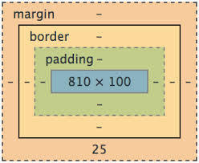

Learning CSS - Padding, Border and Margin
July 6.2014
The skeleton of a web site is constructed from HTML. Instead of bones, HTML defines all of its elements as boxes. Then comes CSS to flesh out the web site and make it beautiful. CSS uses the box model to wrap layers around the box defined by HTML. Each of these layers has unique properties.
Content is at the center of the box model. We can see content in blue. Content is the box that holds holds the site's text and images.
Padding creates a space around the content. Padding takes the background color defined by the content. The brown highlights that appear around the menu items on this page upon hover are created by padding.
Border surrounds the padding and content. It takes the color and design (i.e. solid, dotted, rounded corners) defined by the content. The blue underline on the header of this page is created with a border surrounding only the bottom of the header box.
Margin establishes an invisible force field around the whole package. The blank space above the navigation bar and on either side of the main content of this page are created by margins.
Note: the differences between padding, border and margin can be be unclear because they can be used interchangeably at times. For example, I could indent the title of this page "Tech" by using left margin or left padding. This is possible because there is no border around the content and we are not dealing with different background colors.
Finally, the thickness of each layer begins at the inner layer and extends outwards. When designing a web site, remember that the actual height and width of an element is the sum of the content, plus the layers added by padding, border and margin.